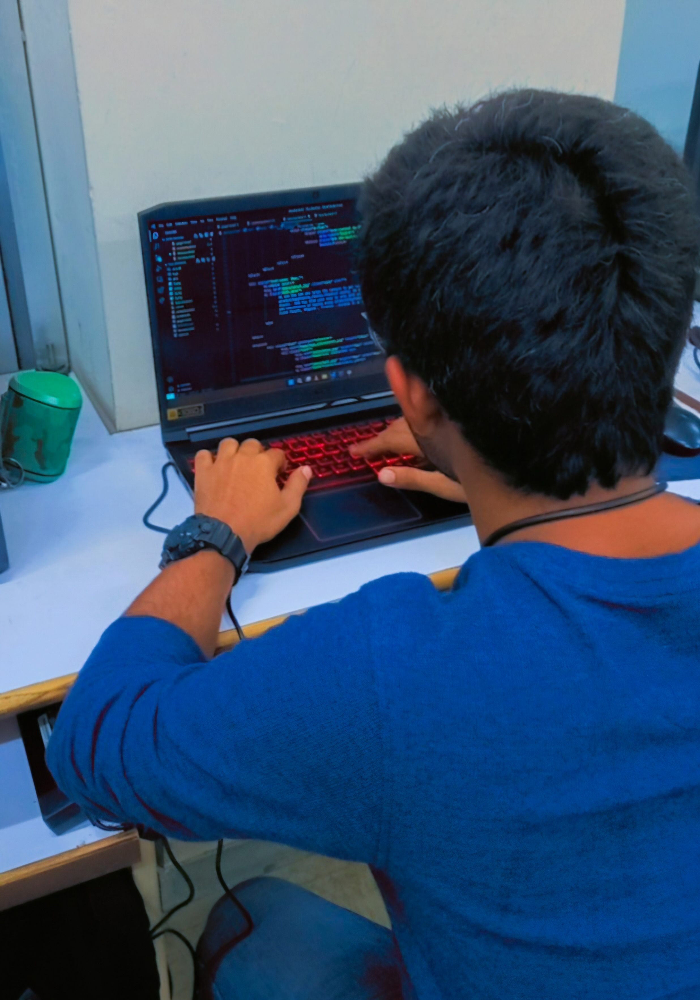

DevOps Engineer with hands-on experience in AWS, GCP, Docker, Kubernetes, and CI/CD automation. Passionate about cloud-native technologies and building scalable infrastructure.

ABOUT ME
I'm a DevOps Engineer based in India with hands-on experience across AWS, GCP, Docker, and Kubernetes. I've spent the last year working in production-grade Kubernetes environments — managing clusters, scaling workloads, handling zero-downtime deployments, and keeping things reliable when it matters most. I care deeply about clean automation, solid CI/CD pipelines, and infrastructure that teams can actually trust.
0+
Year Production K8s
0+
Open Source Projects
0
Companies Contributed To
Here are some of my favorite projects I have done lately. Feel free to check them out.
CONTACT
Open to DevOps roles, freelance infrastructure work, and open-source collaboration. I reply fast.
dhruvmistry2000@gmail.com Say Hello